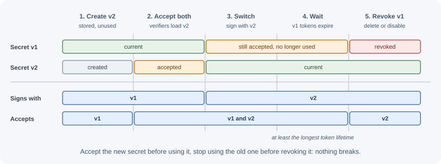

Secrets Management¶
A secret is any value that grants access: a database password, an API key, a private key, a token. Secrets management is how an organization creates, stores, distributes, uses, rotates, audits, and revokes those values, so that the right workloads and people get exactly the access they need, for as short a time as practical, and a leak is noticed and contained quickly.
This lesson covers what counts as a secret, why environment variables are a common but imperfect way to deliver secrets, the main secret stores, injection patterns, workload identity and short-lived credentials, rotation with an overlap window, least privilege and audit, encrypting secrets in Git with SOPS and Sealed Secrets, secret scanning, and a runbook for when a secret leaks.
Why it matters¶
Leaked credentials are one of the most common starting points of
breaches, and leaks rarely look dramatic: a key pasted into a config file
and committed, a token printed in a CI log, an .env file copied into a
Docker image, a secret in a frontend bundle. Automated scanners watch
public repositories and package registries continuously, so a secret
pushed to a public place should be treated as stolen within minutes.
Two well-documented incidents show how environment variables in
particular become a target. In 2021, a modified Codecov uploader script
sent the full env output of customers' CI jobs to an attacker's server
for about two months. In January 2023, CircleCI reported that an attacker
had exfiltrated customer environment variables, tokens, and keys, and
asked every customer to rotate their secrets. In both cases, teams with
short-lived credentials, narrow permissions, and practiced rotation had
far less to clean up.
Real-world usage¶
- CircleCI, January 2023. The incident report describes malware on an engineer's laptop stealing a 2FA-backed single sign-on session, access to customer environment variables, tokens, and keys (encrypted at rest, but the attacker extracted encryption keys from a running process), and the recommendation that customers rotate all secrets and treat those stored during the period as compromised.
- Codecov, 2021. The
security update explains
that unauthorized changes to the Bash Uploader sent the output of
envandgit remote -vfrom customers' CI runners to an outside server from January 31 to April 1, 2021, and advises re-rolling all credentials that were in CI environment variables. - GitHub secret scanning. GitHub's documentation on secret scanning describes scanning repositories for known credential formats and push protection that blocks commits containing secrets before they reach the remote.
- OWASP. The Secrets Management Cheat Sheet covers centralization, least privilege, automated rotation, dynamic secrets, auditing, and handling secrets in CI/CD and containers.
- AWS Secrets Manager rotation. The
rotation documentation
describes managed rotation with versions labeled
AWSCURRENT,AWSPENDING, andAWSPREVIOUS, and strategies such as alternating between two database users so a valid credential always exists.
Popular tools and providers: HashiCorp Vault and its open-source fork OpenBao, AWS Secrets Manager and Systems Manager Parameter Store, Google Cloud Secret Manager, Azure Key Vault, Kubernetes Secrets with the External Secrets Operator or the Secrets Store CSI Driver, SOPS, Sealed Secrets, Doppler, Infisical, 1Password, GitHub Actions secrets and OIDC, and secret scanners such as gitleaks, TruffleHog, and GitHub secret scanning.
How it works¶
What counts as a secret¶
- Passwords and connection strings with credentials (
MONGODB_URIwith a user and password). - API keys and tokens for third parties (payments, email, SMS, AI APIs).
- Signing and encryption keys: JWT signing keys, session secrets, webhook signing secrets, TLS private keys, code signing and update signing keys.
- Cloud credentials: access keys, service account keys.
- OAuth client secrets and refresh tokens.
- SSH private keys and deploy keys.
Not secrets, though often treated as such: public API base URLs, publishable keys designed to be public, usernames without passwords. They still belong in configuration, not code.
Environment variables: common, convenient, imperfect¶
Environment variables are the default way to hand a secret to a process, and for many teams that is acceptable. Know their weaknesses:
| Weakness | How it leaks |
|---|---|
| Inherited by child processes | Every subprocess, script, or tool the app starts receives all variables |
| Readable by the same user and by root | On Linux, /proc/<pid>/environ; process inspection tools |
| Visible in platform metadata | docker inspect, container definitions, Kubernetes pod specs to anyone allowed to read them |
| Printed by debugging | console.log(process.env), env in CI steps, error reports that capture the environment |
| Captured by supply chain attacks | A compromised dependency or CI step can read and send process.env, as in the Codecov incident |
| Static | Rotation needs a restart; nothing expires on its own |
Mitigations: keep secrets out of logs (redact by key), avoid passing the full environment to child processes, prefer reading secrets from mounted files or fetching them at startup with the workload's own identity, and prefer short-lived credentials so a leaked value expires.
Secret stores¶
| Store | Notable features |
|---|---|
| HashiCorp Vault / OpenBao | Many secret engines, including dynamic secrets (per-request database users with leases), PKI, encryption as a service, fine-grained policies, audit devices; self-hosted or managed |
| AWS Secrets Manager | Versioned secrets, managed rotation through Lambda functions, IAM policies, CloudTrail audit, cross-account access |
| AWS Systems Manager Parameter Store | Hierarchical parameters, SecureString encrypted with KMS, cheaper for simple values, no built-in rotation |
| Google Cloud Secret Manager | Versioned secrets, IAM per secret, rotation notifications, audit logs |
| Azure Key Vault | Secrets, keys, and certificates, with hardware-backed key options, RBAC, and logging |
| Kubernetes Secrets | Delivered to pods as files or variables; base64-encoded, not encrypted by default in etcd unless encryption at rest is configured; usually fed from an external store |
Injection patterns¶
| Pattern | How | Pros | Cons |
|---|---|---|---|
| At deploy time | CI or a sync controller (External Secrets Operator) copies secrets into the platform (Kubernetes Secret, PaaS config), exposed as variables or files | App code stays simple | Secrets are copied to another place; rotation needs a sync and a restart |
| At startup | The app uses its identity to fetch secrets with the store's SDK | No copies; access is audited per workload | Startup depends on the store; needs caching and retries |
| Agent or sidecar | Vault Agent or a CSI driver fetches secrets and writes files, refreshing them | Apps read files; rotation without code changes | Another component to run; apps must re-read files |
| Per use with cache | The app fetches on demand and caches with a TTL | Picks up rotations quickly | More calls; must handle store outages |
Files in a memory-backed volume (tmpfs) are generally safer than
variables: they are not inherited by child processes and do not appear
in docker inspect.
Workload identity and short-lived credentials¶
The most dangerous secret is the one that unlocks all the others: a long-lived cloud access key in a CI variable or a config file. Workload identity removes it.
![Diagram: the platform gives the TaskFlow API pod a short-lived signed identity token; the app sends it to the cloud token service asking to assume the taskflow-api-prod role; the token service checks the signature and that the trust policy allows only this service account, then returns temporary credentials valid about an hour; the app asks the secret store for taskflow/prod/mongodb; the store checks that the role may read only taskflow/prod secrets and writes an audit log entry, then returns the value; the app keeps it in memory and refreshes before expiry, so no long-lived key exists anywhere.](../workload-identity-secret.svg)
- In Kubernetes: a projected service account token is exchanged for cloud credentials (EKS Pod Identity or IAM roles for service accounts, GKE Workload Identity, AKS Workload Identity).
- On VMs: an instance role, delivered through the metadata service.
- In CI: GitHub Actions and other CI systems issue OIDC tokens per job, which cloud IAM can trust for a specific repository, branch, or environment (example below).
- Dynamic secrets: Vault's database engine creates a database user per application instance with a lease (for example one hour) and drops it when the lease ends. A leaked credential stops working on its own, and the audit log shows exactly which instance it belonged to.
Rotation with an overlap window¶
Rotation replaces a secret with a new one. Done naively (change the value, restart everything) it causes an outage: some instances still use the old value while others already use the new one, or old tokens are rejected the moment the key changes. The safe pattern always has two valid secrets for a while:

- Create the new secret (v2). Nothing uses it yet.
- Accept both everywhere a secret is checked (token verifiers, webhook receivers, database accepting two users).
- Switch everything that uses the secret (signers, clients, connection pools) to v2.
- Wait for anything issued with v1 to expire or drain (the longest token lifetime, open connections).
- Revoke v1.
Concrete forms:
- JWT signing keys: include a key ID (
kid) in each token, sign with the current key, verify with any key in the current set (example below). - Database passwords: alternate between two database users (AWS calls this the "alternating users" strategy), or let the database accept the old and new password during the window where supported.
- Third-party API keys: most providers allow two active keys; create the second, deploy it, then delete the first.
- Webhook secrets: verify signatures against both secrets during the window.
Least privilege and audit¶
- One secret per service and environment. TaskFlow API in staging and production use different database users, API keys, and signing keys.
- Narrow policies. The production API role may read
taskflow/prod/*and nothing else; CI deploy roles may not read application secrets at all. - Read-only where possible. Reporting jobs get a read-only database user.
- Humans by exception. Engineers do not need production secrets for daily work; access is requested, time-limited, and logged ("break-glass").
- Audit every read. Store audit logs where the secret's users cannot change them, and alert on unusual access (a new principal, a burst of reads, a read from an unexpected network).
Encrypting secrets in Git: SOPS and Sealed Secrets¶
Sometimes teams want secrets versioned next to the configuration that uses them (GitOps). Two common approaches keep them encrypted in Git:
- SOPS encrypts the values in YAML, JSON,
.env, or INI files, leaving keys readable so diffs stay reviewable. The data key is protected by one or more master keys: a cloud KMS key,age, or PGP. Only identities allowed to use the master key can decrypt, at deploy time. - Sealed Secrets (for Kubernetes) encrypts a Secret with the public
key of a controller running in the cluster (
kubeseal). The resulting SealedSecret is safe to commit; only that controller can decrypt it into a normal Secret inside the cluster.
Both still require key management (who can decrypt, how keys rotate) and do not provide dynamic secrets or per-read audit. Many teams use them for low-volume, static secrets and an external store for the rest.
Secret scanning¶
Scan at every stage, because each catches different mistakes:
- Before commit: a pre-commit hook (gitleaks) blocks secrets on the developer's machine.
- On push: platform push protection (GitHub) blocks known credential formats.
- In CI: scan the full history and new commits; fail the build on findings.
- In artifacts: scan container images and built frontend bundles for secrets that came in through files or build arguments.
- Continuously: provider partner programs notify cloud and SaaS providers about leaked keys, which may revoke them automatically.
When a secret leaks: the runbook¶
Order matters. Rotation comes first; history cleanup comes later.
- Revoke or rotate immediately. Assume the secret is already in an attacker's hands. Create a new secret, deploy it, revoke the old one, using the overlap pattern if there is time, or accept a short outage if there is not.
- Assess use. Check the provider's and store's audit logs for activity with the leaked credential since the earliest possible exposure time.
- Contain. If there was misuse, treat it as a security incident: block sources, review data access, notify as required.
- Remove from where it leaked. Delete it from the file, log, or
image. Rewriting Git history (
git filter-repo) helps reduce future exposure, but forks, clones, caches, and pull request refs may still contain it, which is why step 1 is not optional. - Prevent recurrence. Add scanning where it was missed, move the secret to a store, shorten its lifetime, and write down what happened.
When to use and when not to use¶
| Situation | Reasonable approach |
|---|---|
| Solo project, one server | Environment variables from the process manager (EnvironmentFile with tight file permissions), never in Git; a password manager for humans |
| Small team on a PaaS | The platform's encrypted config variables; secret scanning on the repository |
| Kubernetes on a cloud | A cloud secret store plus External Secrets Operator or the CSI driver; workload identity; encryption at rest for etcd |
| Multi-cloud, many services, strict compliance | Vault or OpenBao with dynamic secrets, audit devices, and policies per service |
| GitOps with a few static secrets | SOPS or Sealed Secrets, with key access tightly controlled |
| CI deploying to a cloud | OIDC federation instead of stored cloud keys |
Avoid building your own encryption scheme, sharing secrets over chat or email, and storing secrets in the same repository as code in plain text, even if the repository is private.
Practical examples¶
Fetch a secret at startup with the workload's own identity¶
// src/secrets/aws.js: read secrets from AWS Secrets Manager, cached, no stored keys
import { SecretsManagerClient, GetSecretValueCommand } from "@aws-sdk/client-secrets-manager";
// Region and credentials come from the environment: workload identity or instance role
const client = new SecretsManagerClient({});
const TTL_MS = 5 * 60_000;
const cache = new Map(); // secretId -> { value, expiresAt, pending }
export async function getSecretJson(secretId) {
const entry = cache.get(secretId);
if (entry?.value && entry.expiresAt > Date.now()) return entry.value;
if (entry?.pending) return entry.pending; // one fetch at a time per secret
const pending = client
.send(new GetSecretValueCommand({ SecretId: secretId }))
.then((out) => {
const value = JSON.parse(out.SecretString);
cache.set(secretId, { value, expiresAt: Date.now() + TTL_MS });
return value;
})
.catch((err) => {
if (entry?.value) {
// Store unreachable: keep serving the last good value and retry later
cache.set(secretId, { value: entry.value, expiresAt: entry.expiresAt });
return entry.value;
}
cache.delete(secretId);
throw err;
});
cache.set(secretId, { ...entry, pending });
return pending;
}
// src/db.js: build the connection string from secret parts at startup
import { MongoClient } from "mongodb";
import { getSecretJson } from "./secrets/aws.js";
export async function connectMongo() {
// MONGODB_SECRET_ID is configuration ("taskflow/prod/mongodb"), not a secret
const s = await getSecretJson(process.env.MONGODB_SECRET_ID);
const uri = `mongodb+srv://${encodeURIComponent(s.username)}:${encodeURIComponent(s.password)}@${s.host}/taskflow`;
const client = new MongoClient(uri, { serverSelectionTimeoutMS: 5_000 });
await client.connect();
return client;
}
The process environment holds only the secret's name. If the database password is rotated with alternating users, an authentication failure is the signal to refetch the secret and reconnect.
Rotating a JWT signing key without logging anyone out¶
// src/auth/jwt-keys.js: sign with the current key, accept current and previous
import { SignJWT, jwtVerify, errors } from "jose";
const enc = new TextEncoder();
const keys = new Map([[process.env.JWT_KEY_ID, enc.encode(process.env.JWT_SECRET)]]);
if (process.env.JWT_PREVIOUS_KEY_ID && process.env.JWT_PREVIOUS_SECRET) {
keys.set(process.env.JWT_PREVIOUS_KEY_ID, enc.encode(process.env.JWT_PREVIOUS_SECRET));
}
const currentKid = process.env.JWT_KEY_ID;
export function signAccessToken(userId) {
return new SignJWT({ sub: userId })
.setProtectedHeader({ alg: "HS256", kid: currentKid })
.setIssuedAt()
.setExpirationTime("15m")
.sign(keys.get(currentKid));
}
export async function verifyAccessToken(token) {
const { payload } = await jwtVerify(
token,
async (header) => {
const key = keys.get(header.kid);
if (!key) throw new errors.JWSSignatureVerificationFailed("unknown key id");
return key;
},
{ algorithms: ["HS256"] },
);
return payload;
}
Rotation steps for TaskFlow API: deploy with the new key as
JWT_PREVIOUS_* (verifiers accept it), then swap so the new key is
current and the old one is previous (new tokens use the new key), wait at
least 15 minutes (the token lifetime), then remove the previous key.
GitHub Actions deploying to AWS without stored keys¶
# .github/workflows/deploy.yml (excerpt)
permissions:
id-token: write # allow the job to request an OIDC token
contents: read
jobs:
deploy:
runs-on: ubuntu-latest
environment: production
steps:
- uses: actions/checkout@v7
- uses: aws-actions/configure-aws-credentials@v6
with:
role-to-assume: arn:aws:iam::123456789012:role/taskflow-deploy-production
aws-region: eu-west-1
- run: ./scripts/deploy.sh production
The role's trust policy, trust-policy.json, accepts only this
repository's production environment:
{
"Version": "2012-10-17",
"Statement": [
{
"Effect": "Allow",
"Principal": {
"Federated": "arn:aws:iam::123456789012:oidc-provider/token.actions.githubusercontent.com"
},
"Action": "sts:AssumeRoleWithWebIdentity",
"Condition": {
"StringEquals": {
"token.actions.githubusercontent.com:aud": "sts.amazonaws.com",
"token.actions.githubusercontent.com:sub": "repo:example/taskflow:environment:production"
}
}
}
]
}
There is no AWS key in GitHub at all. A job from another repository, or
from a branch not deploying to the production environment, cannot
assume the role.
Dynamic database credentials with Vault¶
# Each instance gets its own short-lived database user
vault read database/creds/taskflow-api
# Key Value
# lease_id database/creds/taskflow-api/<lease-id>
# lease_duration 1h
# username v-taskflow-api-<random>
# password <generated>
vault lease revoke database/creds/taskflow-api/<lease-id> # remove it early, for example on leak
Encrypting a secrets file with SOPS¶
# .sops.yaml: which key encrypts which files
creation_rules:
- path_regex: secrets/.*\.prod\.yaml$
age: <production-age-recipient>
- path_regex: secrets/.*\.staging\.yaml$
age: <staging-age-recipient>
sops --encrypt --in-place secrets/api.prod.yaml # values become ENC[AES256_GCM,...]
sops secrets/api.prod.yaml # edit in $EDITOR, re-encrypted on save
sops --decrypt secrets/api.prod.yaml | kubectl apply -f - # at deploy time only
Scanning for secrets before they leave the laptop and in CI¶
# .pre-commit-config.yaml
repos:
- repo: https://github.com/gitleaks/gitleaks
rev: v8.30.1
hooks:
- id: gitleaks
gitleaks git --redact -v # scan the repository history, hide secret values in output
gitleaks dir --redact -v dist/ # scan a built frontend bundle before publishing
Purging a leaked file from history (after rotating it)¶
# 1. Rotate the secret first. Then, in a fresh clone:
git filter-repo --invert-paths --path config/production.json
git push --force --all && git push --force --tags
# 2. Ask collaborators to re-clone; contact the host to purge cached views if needed
Best practices¶
- Keep secrets out of code, images, bundles, logs, and chat; store them in a secret store.
- Give every service and environment its own secrets with narrow access.
- Prefer workload identity and short-lived credentials over static keys, especially for CI.
- Rotate with an overlap window; automate rotation where the store supports it; practice it.
- Deliver secrets as files or fetch them at startup where possible; never print the environment.
- Audit every read and alert on unusual access.
- Scan for secrets at commit, push, CI, and artifact stages.
- On a leak: rotate first, investigate second, clean history third.
- Encrypt Kubernetes Secrets at rest and restrict who can read them.
In production¶
- A cloud key from CI appears in an attacker's activity. Detect: cloud audit logs show API calls from unknown networks with a CI key; billing spikes. Cause: a long-lived key in CI variables, exfiltrated by a compromised step or dependency. Fix: revoke the key, review activity, and switch CI to OIDC federation.
- Rotating the database password caused an outage. Detect: authentication failures across instances right after rotation. Cause: the old password was invalidated while instances still used it. Fix: alternating users or a dual-password window, and instances that refetch credentials on authentication errors.
- All users were logged out after a key change. Detect: a spike in token verification failures and sign-ins. Cause: the JWT signing key was replaced without accepting the old one. Fix: key IDs and a verification key set with current and previous keys.
- A secret was found in a public repository's history.
Detect: secret scanning or a provider notification. Cause: a
committed config file or
.env. Fix: rotate immediately, check usage, then purge history and add pre-commit scanning and push protection. - A token shows up in CI logs.
Detect: log review or scanner alert. Cause: a debug
envstep or a tool echoing its configuration. Fix: rotate, remove the step, rely on the CI system's masking only as a safety net, and add log scanning. - The app cannot start because the secret store is down. Detect: startup failures with store timeouts. Cause: a hard dependency on fetching secrets at every start, without caching or retries. Fix: retries with backoff, longer-lived cached values for restarts, and multi-region store replicas where available.
Important terminology¶
- Secret: a value that grants access to something.
- Secret store: a system that stores secrets encrypted, controls access, versions them, and audits reads.
- Injection: delivering a secret to a workload, as a variable, file, or fetched value.
- Workload identity: an identity the platform gives a workload, which can be exchanged for credentials without a stored key.
- OIDC federation: trusting tokens from an external identity provider (such as a CI system) to obtain cloud credentials.
- Dynamic secret: a credential generated on demand with a lease and automatic expiry.
- Rotation: replacing a secret with a new one.
- Overlap window: the period when both old and new secrets are valid during rotation.
- Least privilege: granting only the access a workload needs.
- Secret scanning: automatically detecting secrets in code, history, logs, or artifacts.
- Envelope encryption: encrypting data with a data key that is itself encrypted with a master key (used by SOPS and cloud KMS services).
Common mistakes and misconceptions¶
- Treating a private repository as a safe place for plaintext secrets.
- Believing base64 in a Kubernetes Secret is encryption.
- Rotating by replacing the value everywhere at once.
- Purging Git history and skipping rotation.
- Giving CI broad, long-lived cloud credentials.
- Sharing one set of production credentials across services.
- Logging
process.envor full configuration objects. - Assuming CI log masking catches every format of a secret.
Revision questions¶
- Name four ways a secret in an environment variable can leak.
- Compare injecting secrets at deploy time with fetching them at startup.
- How does workload identity remove the need for a stored cloud key?
- Describe the five steps of rotating a secret with an overlap window, and apply them to a JWT signing key with a 15-minute token lifetime.
- Why must you rotate a leaked secret before cleaning Git history?
- What do SOPS and Sealed Secrets each protect, and what do they not provide compared with a secret store?
- What should the trust policy of a CI deploy role restrict?
- A team has 12 services in 3 environments, each needing a database credential and two API keys. How many distinct secrets should exist under least privilege, and why not fewer?
Further learning¶
- OWASP: Secrets Management Cheat Sheet
- GitHub Docs: About secret scanning
- GitHub Docs: Configuring OpenID Connect in Amazon Web Services
- AWS Secrets Manager: Rotate secrets
- HashiCorp Vault: Database secrets engine
- SOPS documentation
- Kubernetes: Good practices for Kubernetes Secrets
- Next: environment variables and secrets interview questions and answers. Back to the environment variables overview.